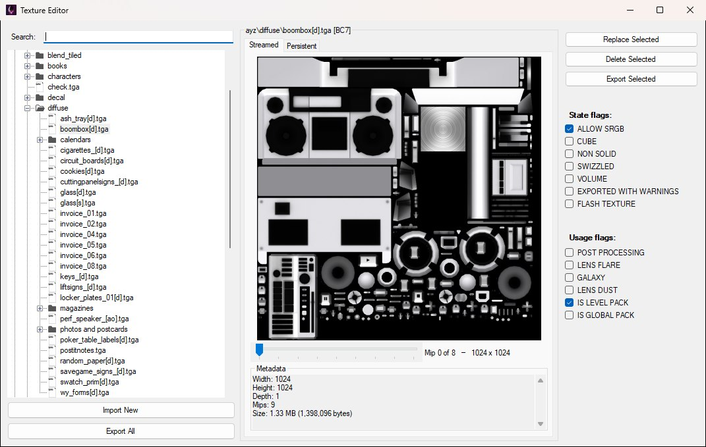
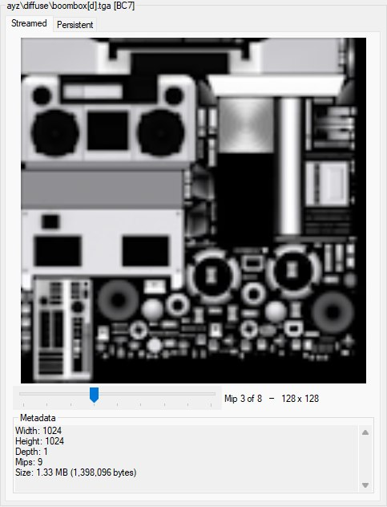
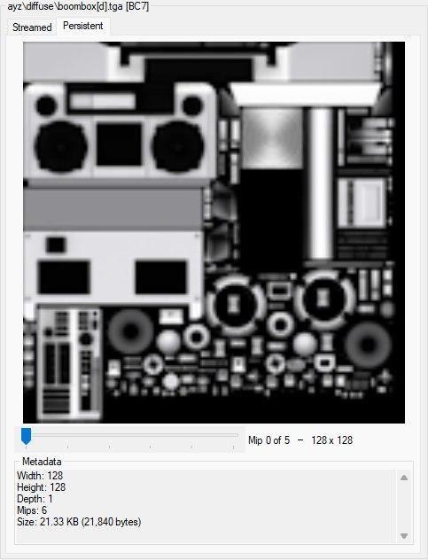
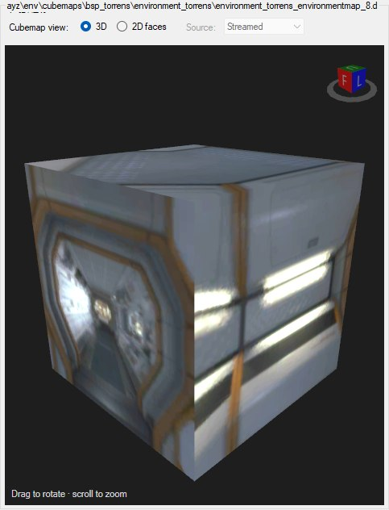
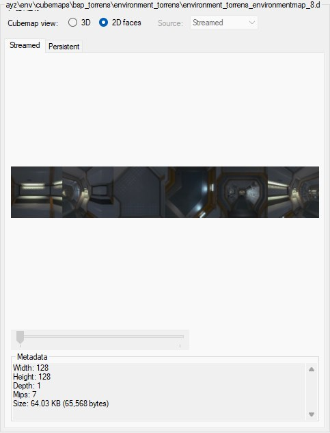
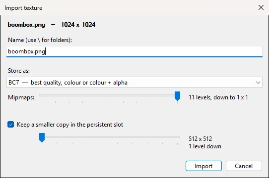
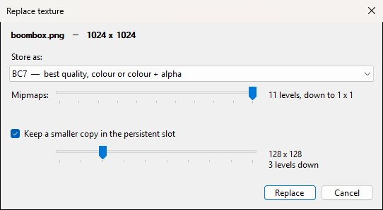
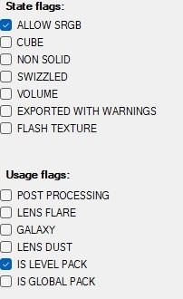

After loading a level, open View → Texture Editor to launch the Texture Editor. It browses and edits the level's texture package under RENDERABLE (e.g. LEVEL_TEXTURES.ALL.PAK / LEVEL_TEXTURE_HEADERS.ALL.BIN). The window, shown below with a texture selected, has three columns: the texture list with Import New and Export All under it, the preview in the middle, and the per-texture buttons and flags on the right.

The Texture Editor with ayz\diffuse\boombox[d].tga selected: tree and import/export buttons on the left, preview in the middle, per-texture actions and flags on the right.
Global textures used to sit in a separate, read-only source. They are now imported into the level automatically when it loads, which makes each level completely self-contained and means the textures it shares with the rest of the game can be edited like any other. There's no longer a source to switch between — everything the level uses is in one list.
The same window can open as a picker (with a Select This Texture button in the bottom-right corner) from the Material Editor (Pick Texture… / Edit Texture…), from an EnvironmentMap entity's Texture parameter in the entity inspector (where it lists only the level's cubemaps), and when adding a decal in the Character Asset Editor. Materials assigned this way show up on models in the Model Editor when textured preview is enabled.
The left tree lists the level's textures. Use Search to filter by name. The preview title shows the texture name and format (ayz\diffuse\boombox[d].tga [BC7] in the figure above), and the Metadata panel gives width, height, depth, mips and size for whatever is on screen.
Under each preview is a mip level slider. A texture is stored as a chain of progressively smaller copies, and the top one tells you least about how it was authored — step down the chain to see what the game actually shows at distance, and to check that a texture you imported built a sensible chain. The label beside the slider names the level and its size, as below, while the Metadata panel keeps describing the whole texture. For a cubemap the slider is greyed out: its content is six chains rather than one, so the preview shows the whole face strip instead.

The mip slider three levels down the streamed chain: the label names the level and its size, and the Metadata panel still describes the full 1024 × 1024 texture.
A texture has two slots, shown as the Streamed and Persistent preview tabs. Empty slots show (none) and disable their tab.

The Persistent tab for the same texture: 128 × 128 with six mip levels and 21 KB, against 1024 × 1024 with nine and 1.33 MB in the Streamed tab.
In the shipped data the persistent copy is never a separately compressed image — it's the streamed chain starting a few levels in. OpenCAGE reproduces that exactly when it writes one, so an imported texture is stored the way the game stores its own. You can see it in the figure above: the streamed copy of boombox[d].tga is 1024 × 1024 with nine levels, and its persistent copy is 128 × 128 with six — the same chain, starting three levels in. Earlier versions wrote the same full-resolution data into both slots, which was wrong; persistent copies are now correctly smaller.
Cubemaps can be viewed either as 2D faces — the six faces side by side in one strip — or in 3D, mapped onto a cube you can drag to rotate and scroll to zoom. Selecting a cubemap adds a Cubemap view row above the preview. 3D is the default and swaps the Streamed / Persistent tabs for the cube, as shown below; 2D faces brings the tabs back with the strip in place of the image. The Source dropdown beside the radio buttons picks which slot the cube is built from, but it's only enabled when a cubemap has both slots filled — every cubemap the game ships is streamed-only, so for those it stays greyed out.

A cubemap in the 3D view. The Source dropdown is greyed out because, like every cubemap the game ships, this one has only a streamed copy.

The same cubemap as 2D faces: the six 128 × 128 faces in one strip on the Streamed tab, with the mip slider greyed out.
Import no longer requires a DDS in exactly the right format. OpenCAGE reads DDS, PNG, JPEG, TGA, BMP, TIFF, Radiance HDR and ASTC, and converts to whichever of the game's formats you pick.
Two encoders do the work, both carried inside OpenCAGE and unpacked when first needed — Microsoft's texconv for the block and uncompressed formats the PC game uses, and Arm's astcenc for ASTC. A DDS that's already in the format you asked for is passed straight through without running either, which is the common case when you export from a texture tool.
ASTC is offered on mobile builds only. Nothing in the PC data uses it, and offering it elsewhere would just be a way to make a texture the game can't load. See Multiple Game Installs for working with the iOS / Android / Switch ports.
\ in it to put the texture in folders), with the clash check running as you type.Either way, an options dialog asks what to do with the image before anything is written. It opens with the file's name and size on its top line, as below:

The import options for a new 1024 × 1024 texture: name, format, how much of a mip chain to build, and where the persistent copy starts.

The same dialog when replacing boombox[d].tga: no name box, the format preset to the slot's BC7, and the persistent slider preset to three levels down — the split the slot already has.
ASTC textures export through the same route, so a mobile build's textures come out as ordinary images rather than as something only the game can read.
State flags and Usage flags are the two checkbox lists on the right of the window, shown below for boombox[d].tga. State covers ALLOW SRGB, CUBE, NON SOLID, SWIZZLED, VOLUME, EXPORTED WITH WARNINGS and FLASH TEXTURE; usage covers POST PROCESSING, LENS FLARE, GALAXY, LENS DUST, IS LEVEL PACK and IS GLOBAL PACK. Both lists are greyed out until a texture is selected. Ticking a box updates the texture in memory straight away and refreshes the preview — there's nothing to apply, but the change isn't on disk until you save the level. Usage options are power-of-two style flags from the game's texture usage enum.

The flag lists for boombox[d].tga: ALLOW SRGB set for state, IS LEVEL PACK for usage.
The Texture Editor has no separate Save button. Persist level texture changes with File → Save Level (Ctrl+S), which writes LEVEL_TEXTURES.ALL.PAK / LEVEL_TEXTURE_HEADERS.ALL.BIN (or the compressed .PAK.FZIP variant) under the level's RENDERABLE folder.
Saving closes the game if it's running so install files aren't locked. Because global textures are imported into the level on load, edits to them are written into the level's own package — the game's global texture pak isn't modified, and the change applies to the level you're editing rather than to every level at once.